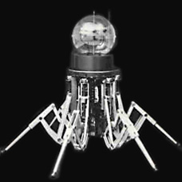

Odex 1 (gebaut von Odetics Inc.) ist der erste kommerziell erhältliche Roboter, der sich auf jeder Art von Gelände bewegen kann. Odex1 kann in Umgebungen arbeiten, die ein Risiko für Menschen darstellen, und wo Fahrzeuge mit Rädern scheitern. (Radioaktive Zonen, Kampfgebiete, Minenstollen.) Seine Beine können auch als Arme agieren, um Objekte zu heben und zu bewegen. Japans Finanzministerium und das Ministerium für Internationalen Handel und Industrie beschließen, 40 Millionen Yen für die Entwicklung von Robotern, die in gefährlichen Umgebungen eingesetzt werden können, zur Verfügung zu stellen. Die Roboter sollen in Atomreaktoren, der Tiefsee und an anderen unzugänglichen Orten Verwendung finden. In San Jose, Kalifornien, wird Nordamerikas bisher größte Roboterherstellerfirma „Adept Technology Inc“. von Brian Carlisle und Bruce Shimano gegründet.